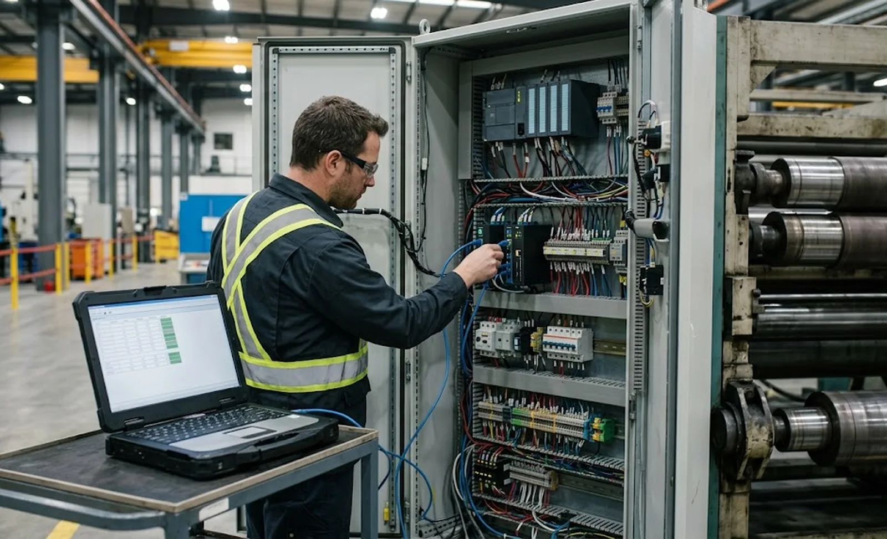
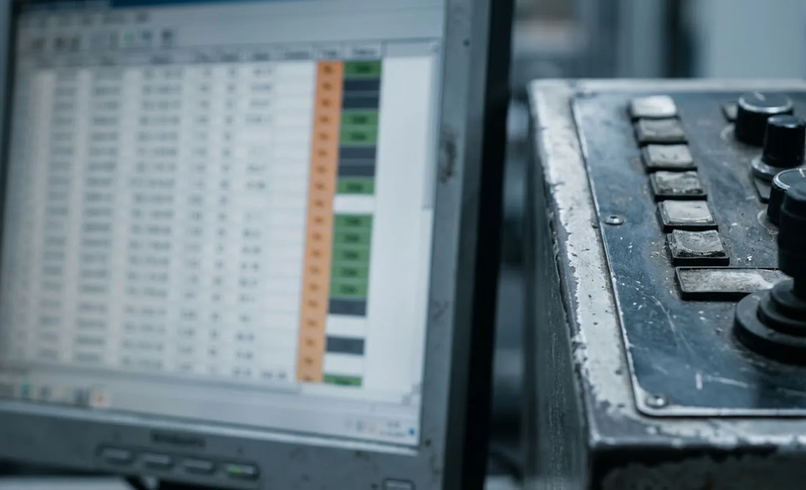

Published October 9, 2026 | By HDPTH Technical Editorial Team

Every slitter rewinder quotation today mentions “Industry 4.0 ready” or “data enabled”. The words cost nothing; the architecture behind them decides whether your next MES project takes weeks or years. When the machine exposes its speeds, tensions, diameters, alarms and counters through an open, documented interface, your plant systems read it like any other source. When it exposes them through a vendor gateway with per-connection licences and an undocumented tag space, every integration becomes a negotiation. This guide explains what OPC UA actually delivers on a converting machine, what to write into the RFQ, and how to verify the connection before the machine leaves the factory. The same questions apply whether you run one machine or a whole converting hall.
Why OPC UA beats proprietary gateways
OPC UA is a published, platform-independent communication standard (IEC 62541) supported by every major automation vendor. A machine with a native OPC UA server offers three practical advantages. First, longevity: the interface survives supplier changes, controller upgrades and plant expansion, because clients talk to the standard, not to a driver. Second, cost structure: no per-connection licence renewals and no custom driver maintenance, unlike gateway products that bill by tag count. Third, semantics: OPC UA’s information model carries structure — a value plus its unit, status and metadata — so your historian stores meaning, not just numbers. The data-logging discipline in our SCADA data logging guide assumes exactly this kind of open access.
What to specify in the RFQ
“OPC UA available” is not a specification. Write these items into the request:
- Server on the machine controller — native in the PLC, not an add-on PC that can fail separately.
- Documented tag list — every available variable, with names, units, data types and update behaviour, delivered as a reviewable file.
- Subscription support — your client sets the sampling and publishing intervals; the machine does not force its own rate.
- Historical access — alarms and events reachable through the interface, not only on the HMI.
- Named network requirements — ports, protocols and firewall rules stated in the manual.
The tag list deserves emphasis: it is the difference between a design and a promise. Machines that pair a good tag list with the recipe discipline in our recipe management guide integrate into line-level systems with minimal engineering.

Security: certificates, roles and segmentation
Any networked machine becomes part of your attack surface, and connectivity specified without security is a liability. OPC UA includes the needed tools: certificate-based authentication for both server and client, encrypted sessions, and user roles that separate reading process data from writing setpoints. Require the machine to ship with security configured — not disabled “for simplicity” — and define who holds administrative rights. Combine the machine features with plant-side segmentation, following the measures in our connected machine cybersecurity guide: dedicated machine network or VLAN, restricted firewall rules, and logging of connections. If remote support is part of the package, the boundaries in our remote diagnostics guide apply. A security configuration reviewed at FAT is a configuration that exists; one promised for later usually never arrives.
Writing setpoints: possible, and to be controlled
OPC UA clients can write as well as read, and passing recipe parameters from a line host into the machine is occasionally useful. Treat writes as a separate, tightly bounded feature: dedicated write nodes, a distinct user role, and validation inside the PLC so no external client can push values outside the machine’s safe envelope. Most converters should specify read-mostly connectivity with writes limited to a documented, tested subset. The wrong architecture — a flat tag space where anything is writable — is a production outage waiting for a curious client.
Verifying connectivity at FAT
Connectivity is testable, so test it. During the factory acceptance test, connect your own OPC UA client — or have your integrator do it — and read live values from the running machine: line speed, unwind and rewind tension, roll diameters, splice counts, alarms. Compare the readings against the HMI; confirm that subscriptions update at the stated rate under load; check that alarm objects arrive with correct text and timestamps; and confirm writes, if specified, respect their validation. Archive the verified tag list with the FAT documents, exactly as our IQ-OQ documentation guide recommends, so commissioning starts from a known interface instead of a discovery project.
Specifying your next connected slitter rewinder?
Tell HDPTH which data your plant systems need and at what rate. We deliver machines with native OPC UA servers, documented tag lists, configured security and a live FAT demonstration on your client — open data you own from the PLC up.
Submit Your Project InquiryFrequently asked questions
Why should buyers insist on OPC UA instead of a proprietary interface?
A proprietary interface locks every future integration to one vendor’s gateway, licence and roadmap. OPC UA is a published, platform-independent standard supported by every major PLC and historian, so your MES, SCADA and analytics tools read the machine directly. When the supplier changes or the plant expands, the interface survives. Open data is also cheaper to keep: no per-connection licence renewals and no custom driver maintenance.
What exactly should the RFQ require for OPC UA connectivity?
An OPC UA server running on the machine controller with a documented tag list in a written data model; subscription support so your client controls update rates; historical access where alarms and trends are needed; a named port and network requirements; and the tag list delivered as a reviewable file, not a runtime discovery exercise. Availability without a documented tag list is a promise, not a design.
Does OPC UA make the machine a security risk?
Any networked machine needs protection, and OPC UA provides the tools when configured: certificate-based authentication, encrypted sessions, and user roles that separate reading process data from writing setpoints. Combine the machine’s own security features with plant-side segmentation as described in our connected machine cybersecurity guide, and verify the configuration at FAT rather than after installation.
Can an OPC UA connection write setpoints into the machine?
Technically yes, and occasionally that is useful, for example passing recipe parameters from a line host. Treat it as a separate, tightly controlled feature: dedicated write nodes, a distinct user role, and validation inside the PLC so no client can push unsafe values. Most buyers should specify read-mostly connectivity with writes limited to a documented, tested subset.
How is OPC UA connectivity verified at FAT?
Connect your own test client or have your integrator connect during the factory acceptance test and read live values: speeds, tension, diameters, alarms and counters. Compare the numbers against the HMI, confirm subscriptions update at the stated rate, check that alarm objects arrive with correct text and timestamps, and archive the tag list with the FAT documents so commissioning starts from a known interface.